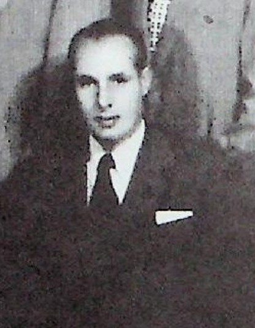

Fernando García Narro
| Fernando García Narro | |
|---|---|
 Retrato | |
| Descripción | Industrial · Saltillo y Monterrey |
| Fechas / lugar | 1908–1991 (según libro) |
| Línea familiar | García Narro, García Garza |
Fernando García Narro (1908–1991 (según libro)) — [Según Durón Jiménez, 1992; sin documento verificado] Sexto hijo del matrimonio García Narro. Estudió en el Colegio de San Juan y en Estados Unidos; casó muy joven con Consuelo Sánchez (cinco hijos). Trabajó muchos años en Hojalata y Lámina (Monterrey), donde llegó a ser director técnico, y después, con otros empresarios, fundó la empresa Aceros de México. Fue dueño del cuadro La Aguadora de su madre (nota 45). Murió en Monterrey el 12 de julio de 1991.
Contenido
- 1 Vida y cronología (según las fuentes citadas; sin documento verificado)
- 2 Familia (según el libro; sin documento verificado)
- 3 Parentescos según el libro (sin documento verificado), con las fichas de esta galería y del archivo
- 4 Cargos, oficios y obra
- 5 Lo que dice el libro (sin documento verificado)
- 6 Investigación complementaria
- 7 Contradicciones del libro
- 8 Dato en investigación
- 9 Fuentes
- 10 Referencias
Aviso de método. Esta página reúne lo que dice el libro de Martha Durón Jiménez, Orígenes de una fundación (Archivo Municipal de Saltillo, 1992), y otras fuentes secundarias. Nada de ello se da por establecido: las filiaciones, apellidos y fechas se presentan como «según Durón Jiménez, p. X; sin documento verificado». Sólo se tendrá por probado lo que respalde una imagen de documento (acta, protocolo, registro) leída y transcrita; cuando se incorpore, se indicará aquí.
Según Durón Jiménez, Orígenes de una fundación (1992); sin documento verificado: Sexto hijo del matrimonio García Narro. Estudió en el Colegio de San Juan y en Estados Unidos; casó muy joven con Consuelo Sánchez (cinco hijos). Trabajó muchos años en Hojalata y Lámina (Monterrey), donde llegó a ser director técnico, y después, con otros empresarios, fundó la empresa Aceros de México. Fue dueño del cuadro La Aguadora de su madre (nota 45). Murió en Monterrey el 12 de julio de 1991.
Biografía elaborada a partir del libro de Martha Durón Jiménez, Orígenes de una fundación. Genealogía de don José García Rodríguez, 1530-1992 (Archivo Municipal de Saltillo, 1992), cuyo texto se cita en extracto con su página, y de investigación complementaria con fuentes citadas. Lo que no tiene fuente se marca «dato en investigación»; las contradicciones se señalan sin corregirlas.
Retrato: De adulto, detalle de la fotografía de su familia (libro, p. 50). Fuente de la imagen: Durón Jiménez, Orígenes de una fundación, 1992.
- Años (según el libro y fuentes citadas; sin documento verificado): 17-feb-1908 – 12-jul-1991
- En el libro: pp. 50-51 (texto; foto de la familia p. 50); árbol p. 58
Vida y cronología (según las fuentes citadas; sin documento verificado)[editar]
- 17-feb-1908 Nace en Saltillo. (libro p. 50; árbol p. 58.)
- s/f Primeros estudios en el Colegio de San Juan y luego en Estados Unidos. (libro p. 50.)
- antes de ago-1926 Se casa «muy joven» con Consuelo Sánchez (n. 20-may-1908). Su primera hija nace el 17-ago-1926. (libro p. 50; árbol p. 58.)
- 1942 Su retrato pintado por su madre figura en la exposición del 75 aniversario del Ateneo. (libro p. 42.)
- s/f Trabaja «por muchísimos años» en Hojalata y Lámina (Monterrey), con mucho tiempo en la Dirección Técnica; más tarde funda Aceros de México con otros empresarios. (libro p. 51. No confirmado en fuentes abiertas.)
- 12-jul-1991 Fallece en Monterrey; su familia vive allí. (libro p. 51; árbol p. 58.)
Familia (según el libro; sin documento verificado)[editar]
Padres: José García Rodríguez y María Narro Valdés. Esposa: Consuelo Sánchez (n. 20-may-1908). Hijos (libro pp. 50-51): Consuelo (n. 17-ago-1926; ↔ Dr. Ismael Fernández; hijos Rosa María, Juan Manuel, Ismael Jaime, Eduardo José y David de Jesús; pintora en Monterrey, alumna de su abuela María Narro), Fernando (n. 15-mar-1928; ↔ Cecilia Viesca), Javier (n. 13-mar-1929; ↔ Olga Garza), Jorge (n. 18-ene-1932; ↔ Margarita Garza) y Jaime (n. 22-ene-1934 en Torreón; ↔ Socorro Zambrano). Pie de foto p. 50: de pie Jorge, Ismael Fernández, Consuelo, Fernando, Javier y Jaime García Sánchez; sentados Consuelo Sánchez y don Fernando García Narro.
Parentescos según el libro (sin documento verificado), con las fichas de esta galería y del archivo[editar]
- Padres: Don José García Rodríguez · Doña María Narro Valdés
- Hermanos: José García Narro · María del Carmen García Narro · Antonio García Narro · María de la Luz García Narro · María del Rosario García Narro · Lic. Dionisio García Narro
Cargos, oficios y obra[editar]
Directivo técnico en Hojalata y Lámina y fundador de Aceros de México (según el libro, sin fuente independiente).
Lo que dice el libro (sin documento verificado)[editar]
Extracto fiel de Durón Jiménez, Orígenes de una fundación, 1992, pp. 50-51 (texto; foto de la familia p. 50); árbol p. 58. Se conserva la ortografía original; [sic] señala un error del original y [n] una llamada de nota.
FERNANDO GARCÍA NARRO:
Nació en la ciudad de Saltillo el 17 de febrero de 1908 y realizó sus primeros estudios en el Colegio de San Juan y luego en los Estados Unidos. Contrajo matrimonio muy joven con Consuelo Sánchez y procrearon en su matrimonio a: Consuelo, Fernando, Javier, Jorge y Jaime García Sánchez.
[FOTO – pie de foto]: De pie: Gorge [sic] García Sánchez, Ismael Fernández, Consuelo García Sánchez, Fernando García Sánchez, Javier García Sánchez y Jaime García Sánchez. Sentados: Consuelo Sánchez y don Fernando García Narro.
Consuelo García Sánchez, nace en la ciudad de Saltillo el 17 de agosto de 1926, realiza sus estudios en el Colegio del Sagrado Corazón y contrae matrimonio con el doctor Ismael Fernández, originario de Tamaulipas y procrean a Rosa María, Juan Manuel, Ismael Jaime, Eduardo José y David de Jesús. Consuelo García tomó inicialmente clases de pintura con su abuelita doña María Narro y actualmente es una reconocida pintora en Monterrey.
Fernando García Sánchez, nace en la ciudad de Saltillo el 15 de marzo de 1928, realiza sus estudios en el Tecnológico de Monterrey, contrae matrimonio con Cecilia Viesca y procrean a Fernando, Cecilia, Andrés, María Eugenia y Guillermo.
Javier García Sánchez, nace en la ciudad de Saltillo el 13 de marzo de 1929, realiza sus estudios en el Tecnológico de Monterrey, contrae matrimonio con Olga Garza y procrean a Javier, Olga, María Esther, José y Antonio.
Jorge García Sánchez, nació en la ciudad de Saltillo, el 18 de enero de 1932, realiza sus estudios en el Tecnológico de Monterrey, contrae matrimonio con Margarita Garza y procrean a: Jorge Antonio, Margarita, Rocío y Juan Bernardo.
Jaime García Sánchez, nace en Torreón el 22 de enero de 1934, realiza sus estudios en el Tecnológico de Monterrey, contrae matrimonio con Socorro Zambrano y procrean a: Jaime y Gabriela.
Don Fernando García trabajó por muchísimos años en Hojalata y Lámina, en Monterrey, llegando a ocupar por mucho tiempo, la Dirección Técnica. Posteriormente y junto con otros empresarios funda la empresa de Aceros de México. Don Fernando fallece el 12 de julio de 1991 en Monterrey, actuamente [sic] su familia radica en esa ciudad.
Investigación complementaria[editar]
- Una búsqueda del 28-oct-2026 no confirmó que fuera director técnico de Hojalata y Lámina; devolvió una ficha en Geni (https://www.geni.com/people/Fernando-Garc%C3%ADa-Narro/6000000008301398839, no abierta; el sitio suele bloquear la lectura) y menciones de un arquitecto homónimo vinculado a proyectos de Aceros de México, que no se atribuyen a él sin confirmación. Dato en investigación.
- Su colección incluía La Aguadora de María Narro (libro nota 45: «recientemente fallecido»).
Contradicciones del libro[editar]
Se registran sin corregir.
- Edad en el matrimonio: «muy joven» (libro) con primera hija en 1926 (él tenía 18 años si n. 1908). Compatible con el árbol, pero conviene confirmar la fecha del matrimonio.
- Pie de foto p. 50: «Gorge [sic] García Sánchez» (error del original para Jorge).
Dato en investigación[editar]
- Actas de nacimiento, matrimonio y defunción; cargo exacto en Hylsa/Hojalata y Lámina; fundación de «Aceros de México»: dato en investigación.
- Contactar descendientes (Jaime García S. Narro: ¿nieto?): dato en investigación.
Fuentes[editar]
- Martha Durón Jiménez, Orígenes de una fundación. Genealogía de don José García Rodríguez 1530-1992, Archivo Municipal de Saltillo, 1.ª ed., diciembre de 1992, 146 pp..
Referencias[editar]
- «Fernando García Narro», Genealogía Sefardí — investigación Sefarad-MX, genealogiasefardi.site/biografias/fernando-garcia-narro.